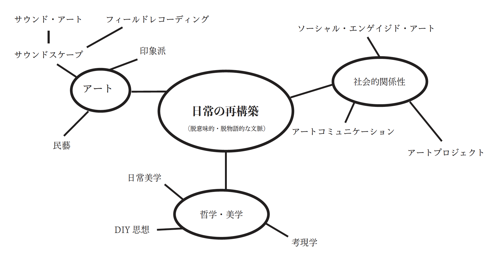

Vision / 日常の再構築

現代社会の効率化の中で失われつつある、偶然性や不確実性といった非言語的な豊かさ、すなわち「ときめき」をアートを通じて再発見する試み。
鑑賞者が作品と関わることで、日常を再構築する主体へと変えることを目指している。このプロセスを通じて、アートと日常の境界を脱構築する。
コミュニケーションの連鎖
- 作家と世界のコミュニケーション：作家が自身の視線を通じて日常の断片を感受し、表現する。
- 作品を媒介にした作家と鑑賞者のコミュニケーション：鑑賞者は作品を通して作家の視点に触れ、新たな気づきを得る。
- 鑑賞者と世界のコミュニケーション：作品から得た視点を持って日常を見つめ直すことで、鑑賞者の日常は再構築される。